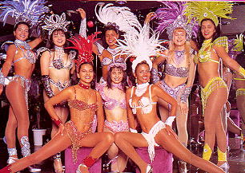

ＧＷは、野遊びや新緑探索をされましたでしょうか。
皆様お変わりなく東京生活をおくられていることと存じます。
さて、高高神田会 暫く振りに盛り上がります。それもサンバで盛り上がります。

今回の講師は、５０年卒の藪崎千鶴子さんで、藪崎さんは、昨年の玉翠会プログラムでも紹介されていますが、ブラジル生活のころ、本場のサンバ・カーニバルにも参加されています。
当日は、ブラジルで使った衣装も持参し、サンバの歴史、本場でのカーニバルの盛り上がりなどの話をしてくれます。
踊りも教えて貰います。
今回の神田会、サンバなのだからみんな踊ります。
サンバの歴史を学んで、酒を飲み、サンバの踊りを練習して、人の振り見て（大いに笑いこけながら）我が振りも直しつつ、盛り上がります。
踊るために、会場は、新宿になりました。
高高神田会 たまには新宿で サ ン バ で 盛 り 上 が ろ う
ということで第１０回高高神田会のご案内を申し上げます。
日時：５月１８日（木曜日） 午後６時２０分～午後８時３０分
場所：新宿区大久保２－６－１０ 第２アルプスビル地下１階
（明治通り 大久保２丁目交差点近く）
Ｎｅｗ Ｐｏｉｎｔｅ（ニュー・ポアント） TEL３２０５－６６６１
なお、会場の「ニュー・ポアント」は、ショウ・クラブで、踊るステージもあり、踊り子もいます。
勿論、当日は、ブラジル美人の情熱的なサンバのショウも見られます。
我々も踊り、本場のサンバのショウを見ると、日本と南米の違いや情熱の違いなどが体感できるのでないかと思っております（自分の年も体感できるかも知れませんが）。
・・・なお、予めお断りしますが、踊り子は、実は、全員がブラジルでなく、スペインやロシアからのダンサーもいます。
また、踊り子さんには決して触れないようにお願いします。（？）
このショウ・クラブを２時間貸し切りにしました。
一人８，０００円の予算です（神田会ですので、先輩には少し多めに負担して戴き、若者の負担をできるだけ少なくしたいと思っております）。
今回は時間が限定され６時３０分から８時３０分までです。
２時間でサンバが終わった後は、渋谷に移動してうどんを軽く食う予定ですので、遅れてくる方も８時３０分までにくれば、少しはサンバを楽しんで、さぬきうどんが楽しめます（二次会は、渋谷警察裏にあるうどん「高松」―電話３４０６－０８６５です）。
今回の企画は 神田会の宴会部長ヒゲのフセイン・ナカヤマ君が、アゴヒゲ小山君をまき込んで、本場のサンバの参加経験を持つ同級生を講師に頼んでの計画、実施です。
このために、ナカヤマ君と小山君とオカザキ君は、新宿に下見に行って夜中まで飲んで騒ぎました。
また、過日は講師を囲んでヒゲ仲間とハゲ仲間が神田のうどんやで打ち合わせを行い、当日の企画をめぐって盛り上がりました。
このように一部では既に大いに盛り上がっております。
中山・小山のヒゲコンビが楽しむための企画を考え、サンバ衣装をきて写真がとれたり、小島豊子さんにはハジケル踊り子になって活躍して貰い、中山君等はハジケルに対抗してハゲテル踊り子になり、全員参加のサンバ大会を盛り上げます（過日の打ち合わせでは、中山君は決めパンの赤パンツ・ｍｙ網タイツで参加するぞと張り切っていましたが、最近張り切り過ぎて、自宅のサンバ練習で腰を傷めたとの情報も入ってきております）。
そんなかんなで、いよいよ盛り上がる神田会、今回はサンバに挑戦です。
踊りなど一合マイターしか知らんぞ、という方も、バンフレットのような美人の踊りをたまには見たいのぉというオジさん気味の人も、俺の教養が邪魔するが付き合いだからしょうがないと言われる方も、是非参加下さい。
勿論いつものように美人の参加も歓迎ですし、神田会にでて美人になろうと手ぐすね引いておられる方も、久しぶりの美人になるチャンスですので是非とも参加下さい。
また、いつものように三崎屋さんの奥様邦ちゃんもご参加下さい（意外と三崎屋さんがサンバが上手かったりしたりすると会場が盛り上がりますがー先輩サンバを練習して参加してくれませんか？
久保先輩や大西先輩の奥様も参加されませんか。（両先輩が意外に静かになったりするのではないかとも期待されますが）
今回はショウ・クラブなので、食事は期待できません。
食事を減量して、運動をして、笑って、気分転換ができる極めて健康的な試みです。
これに参加するだけで、皆さんが一夜にして健康になれます。
このようにして、高高神田会にまたも新しい伝説の１ページが開かれようとしています。
ぜひ 参加して 一緒に楽しい 国際都市・江戸 の ひとときを 楽しみましょう。